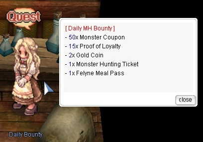

File list
Jump to navigation
Jump to search
This special page shows all uploaded files.
{kind=link}
{kind=link}
| Date | Name | Thumbnail | Size | User | Description | Versions |
|---|---|---|---|---|---|---|
| 01:56, 23 September 2015 | SFXGuide1.png (file) | 3 KB | Brownie | 1 | ||
| 01:57, 23 September 2015 | SFXGuide2.png (file) | 3 KB | Brownie | 1 | ||
| 01:58, 23 September 2015 | SFXGuide3.png (file) | 5 KB | Brownie | 1 | ||
| 01:59, 23 September 2015 | SFXGuide4.png (file) | 36 KB | Brownie | 1 | ||
| 02:01, 23 September 2015 | SFXGuide5.png (file) | 17 KB | Brownie | 1 | ||
| 02:08, 23 September 2015 | Ba assassincross.gif (file) | 1 KB | Brownie | 1 | ||
| 02:09, 23 September 2015 | Ba appleidun.gif (file) | 1 KB | Brownie | 1 | ||
| 02:11, 23 September 2015 | Ba poembragi.gif (file) | 1 KB | Brownie | 1 | ||
| 02:12, 23 September 2015 | Dc humming.gif (file) | 1 KB | Brownie | 1 | ||
| 02:13, 23 September 2015 | Dc dontforgetme.gif (file) | 1 KB | Brownie | 1 | ||
| 02:14, 23 September 2015 | Dc fortunekiss.gif (file) | 1 KB | Brownie | 1 | ||
| 02:14, 23 September 2015 | Dc serviceforyou.gif (file) | 1 KB | Brownie | 1 | ||
| 02:32, 23 September 2015 | Bd richmankim.gif (file) | 1 KB | Brownie | 1 | ||
| 02:33, 23 September 2015 | Bd eternalchaos.gif (file) |  |
1 KB | Brownie | 2 | |
| 02:33, 23 September 2015 | Bd drumbattlefield.gif (file) | 1 KB | Brownie | 1 | ||
| 02:33, 23 September 2015 | Bd ringnibelungen.gif (file) | 1 KB | Brownie | 1 | ||
| 02:34, 23 September 2015 | Bd rokisweil.gif (file) |  |
1 KB | Brownie | 1 | |
| 02:34, 23 September 2015 | Bd intoabyss.gif (file) |  |
1,012 bytes | Brownie | 1 | |
| 02:34, 23 September 2015 | Cg moonlit.gif (file) | 1 KB | Brownie | 1 | ||
| 02:35, 23 September 2015 | Bd siegfried.gif (file) |  |
1 KB | Brownie | 1 | |
| 02:36, 23 September 2015 | Mi rush windmill.gif (file) |  |
1 KB | Brownie | 1 | |
| 02:36, 23 September 2015 | Mi echosong.gif (file) | 1,021 bytes | Brownie | 1 | ||
| 02:36, 23 September 2015 | Mi harmonize.gif (file) |  |
1,018 bytes | Brownie | 1 | |
| 02:36, 23 September 2015 | Wa swing dance.gif (file) |  |
1 KB | Brownie | 1 | |
| 02:36, 23 September 2015 | Wa symphony of lover.gif (file) |  |
1 KB | Brownie | 1 | |
| 02:36, 23 September 2015 | Wa moonlit serenade.gif (file) |  |
1,013 bytes | Brownie | 1 | |
| 02:36, 23 September 2015 | Wm deadhillhere.gif (file) |  |
1 KB | Brownie | 1 | |
| 02:36, 23 September 2015 | Wm voiceofsiren.gif (file) |  |
1 KB | Brownie | 1 | |
| 02:37, 23 September 2015 | Wm lullaby deepsleep.gif (file) | 1 KB | Brownie | 1 | ||
| 02:37, 23 September 2015 | Wm sircleofnature.gif (file) | 1 KB | Brownie | 1 | ||
| 02:37, 23 September 2015 | Wm poemofnetherworld.gif (file) |  |
1,016 bytes | Brownie | 1 | |
| 02:38, 23 September 2015 | Wm song of mana.gif (file) |  |
1 KB | Brownie | 1 | |
| 02:38, 23 September 2015 | Wm dance with wug.gif (file) |  |
1 KB | Brownie | 1 | |
| 02:38, 23 September 2015 | Wm saturday night fever.gif (file) | 1 KB | Brownie | 1 | ||
| 02:38, 23 September 2015 | Wm lerads dew.gif (file) |  |
1 KB | Brownie | 1 | |
| 02:38, 23 September 2015 | Wm melodyofsink.gif (file) |  |
1 KB | Brownie | 1 | |
| 02:38, 23 September 2015 | Wm beyond of warcry.gif (file) |  |
1 KB | Brownie | 1 | |
| 02:38, 23 September 2015 | Wm unlimited humming voice.gif (file) | 1 KB | Brownie | 1 | ||
| 02:38, 23 September 2015 | Wm sound of destruction.gif (file) |  |
1 KB | Brownie | 1 | |
| 02:49, 23 September 2015 | Bd lullaby.gif (file) | 1 KB | Brownie | 1 | ||
| 14:27, 27 September 2015 | MH FelyneChef.jpeg (file) | 23 KB | Renata | 1 | ||
| 14:28, 27 September 2015 | MH FloodedForestMap.jpeg (file) | 12 KB | Renata | Map of Flooded Forest (Monster Hunting). | 1 | |
| 14:42, 27 September 2015 | MH CTSample.jpeg (file) |  |
630 KB | Renata | (Monster Hunting) Hunting Celestial Tendrillions in Flooded Forest with a full party. | 1 |
| 14:49, 27 September 2015 | MH Guild.jpeg (file) | 258 KB | Renata | Interior of Monster Hunting Guild. | 1 | |
| 15:18, 27 September 2015 | MH HuntersAssistant.jpeg (file) | 151 KB | Renata | 1 | ||
| 15:20, 27 September 2015 | MH ForestGuide.jpg (file) | 57 KB | Renata | 1 | ||
| 01:12, 8 October 2015 | MH Neko.jpg (file) | 60 KB | Renata | 1 | ||
| 01:19, 8 October 2015 | MH Daily.jpg (file) |  | 38 KB | Renata | 1 | |
| 00:14, 9 October 2015 | Blood Sucker.png (file) | 1 KB | AloeLeaflet | 1 | ||
| 00:14, 9 October 2015 | Cart Boost (Geneticist).png (file) | .png) |
1 KB | AloeLeaflet | 1 |
{kind=link}
{kind=link}
{kind=link}
{kind=link}
{kind=link}
{kind=link}
{kind=link}
{kind=link}
{kind=link}
{kind=link}
{kind=link}
{kind=link}
{kind=link}
{kind=link}
{kind=link}
{kind=link}
{kind=link}
{kind=link}
{kind=link}
{kind=link}
{kind=link}
{kind=link}
{kind=link}
{kind=link}
{kind=link}
{kind=link}
{kind=link}
{kind=link}
{kind=link}
{kind=link}